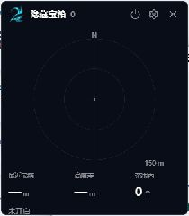

EXPLORATION GUIDE
AION2 隐藏宝箱雷达使用指南
用紧凑浮窗查看已识别的隐藏宝箱记录。雷达仍是实验功能：能够识别连接，不代表已经取得角色位置或附近宝箱。
适用于 2.0.64 · 更新于
打开浮窗，按需开启
- 安装最新版亚特雷亚助手和 Npcap 驱动。已有 Npcap 无需重复安装，也无需 SDK。
- 在助手主界面打开宝箱雷达，主界面继续保留。只打开浮窗不会启动采集。
- 点击浮窗上的电源按钮直接开启，无需二次确认；采集说明可在设置中查看。
- 再次点击电源按钮暂停，或关闭雷达窗口。若 DPS 仍在运行，采集器会继续服务于战斗统计。
浮窗默认 210 × 240 逻辑像素，显示比例随系统缩放调整。设置在独立窗口打开，可调整范围、透明度、标记和提示音，不会把游戏里的浮窗撑大。

连接、定位与宝箱是三个不同状态
- 等待游戏连接：尚未识别可用连接，先检查游戏、Npcap 和运行权限。
- 已连接，等待首次角色定位：连接已识别，但没有取得自己的位置，因此不能计算宝箱距离。
- 参考位置：坐标一段时间未刷新时保留上次位置，距离带“约”并显示定位年龄，不代表实时精确定位。
- 范围内数量：只统计已收到且可根据当前定位判断范围的宝箱记录；显示 0 不能证明周围没有宝箱。
雷达正北朝上，不随镜头旋转。距离包括高度差；切图或断线后会清除旧定位。普通步行不保证刷新坐标，正常跳跃、冲刺或滑翔可能帮助刷新，但不保证每次动作都能完成定位。
宝箱就在附近，却没有标记？
- 先看底部状态，区分未开启、等待连接和缺少角色定位；确认电源按钮已开启。
- 如提示 Npcap 未加载或权限不足，按驱动提示处理后重试。游戏已打开不等于采集链路可用。
- 连接已识别但仍无自身坐标时，正常移动或进行跳跃等动作，观察状态是否刷新。
- 游戏更新后检查助手版本；仍有问题时记录客户端、助手版本、底部状态和截图，提交问题反馈。
雷达只能处理客户端收到的对象记录，不是全地图宝箱数据库，也无法保证识别所有加速器连接或宝箱类型。
目前验证到什么程度？
角色定位已在本地实机观察成功；可见宝箱标记与真实距离尚未完成全面现场验收。自动化测试覆盖协议、定位及窗口逻辑，不替代游戏现场验证。
DPS 与雷达可分别或同时开启，关闭主界面后保留托盘。采集在本机处理，不上传、不发送游戏封包，也不读取游戏内存；第三方工具仍需遵守游戏规则。